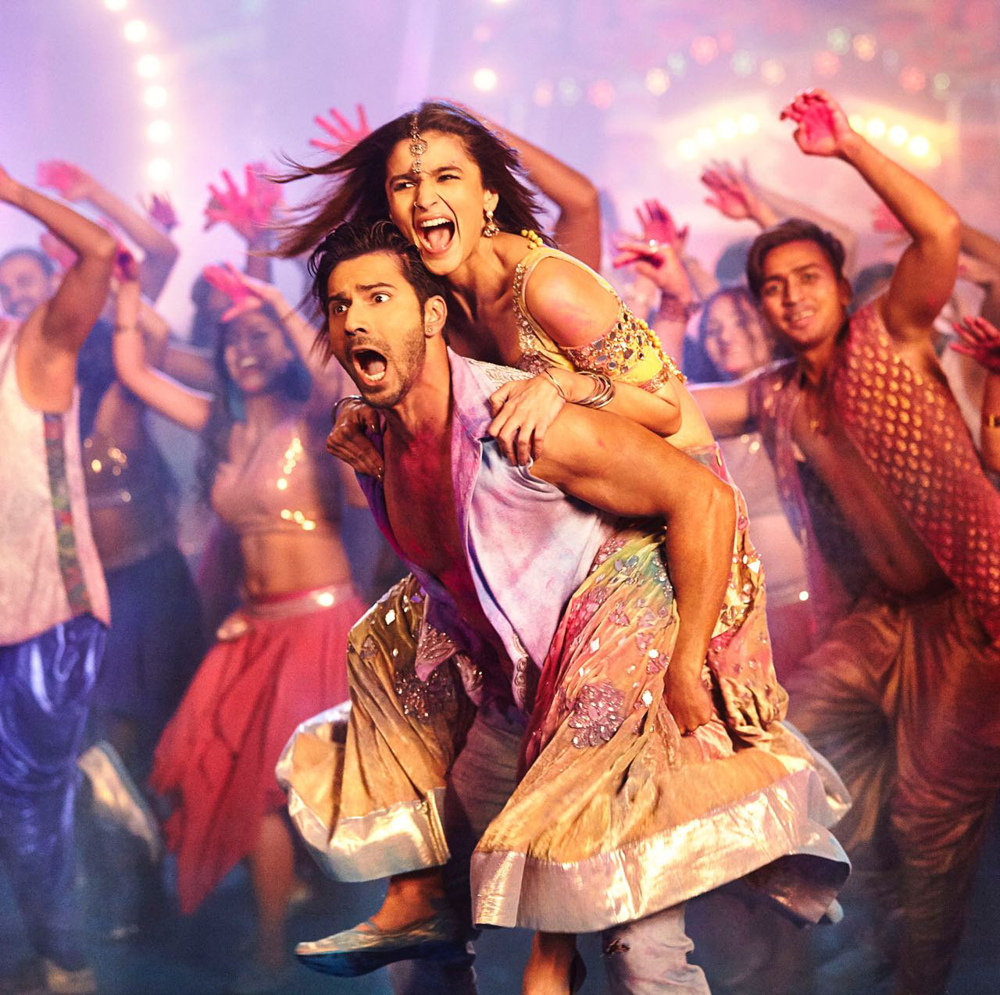

Title
-
Main stars : Varun Dhawan as Badrinath "Badri" Bansal, Alia Bhatt
as Vaidehi Trivedi Bansal,Rituraj Singh as Ambarnath "Ambar"
Bansal,Yash Sinha as Aloknath "Alok" Bansal
- Age restriction :PG
Showing times
- Mon-Fri : 15:00h-20:00h
- Sat : 14:00h-23:00h
- Sun : 11:00h-17:00h
Badrinath "Badri" Bansal is the youngest son of a wealthy family in
Jhansi. In a flashback, it is shown that Badri's elder brother,
Aloknath "Alok" Bansal was madly in love with a girl and was going
to leave the family for her because their father disapproved, but
decided against it after their father Ambarnath "Ambar" Bansal's
first heart attack. Now Alok is married to Urmila Shukla through an
arranged marriage and she is not allowed to work despite being very
intelligent and better professionally trained than Alok himself.
Alok is also depressed at having to leave his love and be forced
into a marriage, so he spends a lot of his time drinking. Badri
fears the same fate for himself and when he sees the beautiful and
educated Vaidehi Trivedi at a wedding supposedly being looked after
by her father Mayank, he falls for her immense beauty and charm. He
eventually becomes obsessed with her and makes it his mission to
marry her with Ambar's approval.